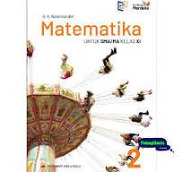
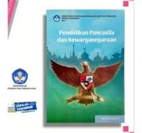
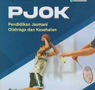

` Untuk siswa siswi yang ingin meminjam buku 8 }: Form
Perpustakaan berfungsi untuk menyimpan buku pelajaran yang di butuhkan oleh siswa SMKN 7. Perpustakaan harus dapat memberikan informasi yang dibutuhkan oleh siswa siswi SMKN 7 Makassar.
| No | Cover | Nama buku | Kelas yang meminjam | Status | Tanggal pengembalian |
|---|---|---|---|---|---|
| 1 | bahasa indonesia | XI RPL | Di pinjam | Setelah jam pembelajaran selesai | |
| 2 | Sejarah | XI PS 1 | Di Pinjam | Setelah jam pembelajaran selesai | |
| 3 |  | Matematika | XI AP 1 | Di pinjam | Setelah jam pembelajaran selesai |
| 4 | Seni Budaya | XI AK 3 | Di Pinjam | Setelah jam pembelajaran selesai | |
| 5 |  | PPKN | XI AP 2 | Di Pinjam | Setelah jam pembelajaran selesai |
| 6 |  | PJOK | XI AK 2 | Di Pinjam | Setelah jam pembelajaran selesai |
Terima kasih telah meminjam buku di perpustakaan smkn negeri 7 makassar.kami berharap buku ini dapat membantu dan menambah pengetahuan anda. harap juga buku ini dengan baik dan kembalikan tepat waktu sesuai dengan ketentuan yang berlaku. Jika anda memerlukan bantuan lebih lanjut atau memiliki pertanyaan, jangan ragu untuk menghubungi kami.Selamat tinggal!